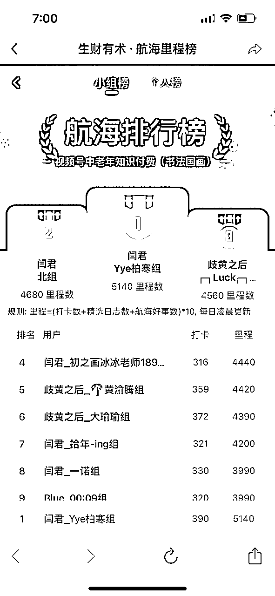
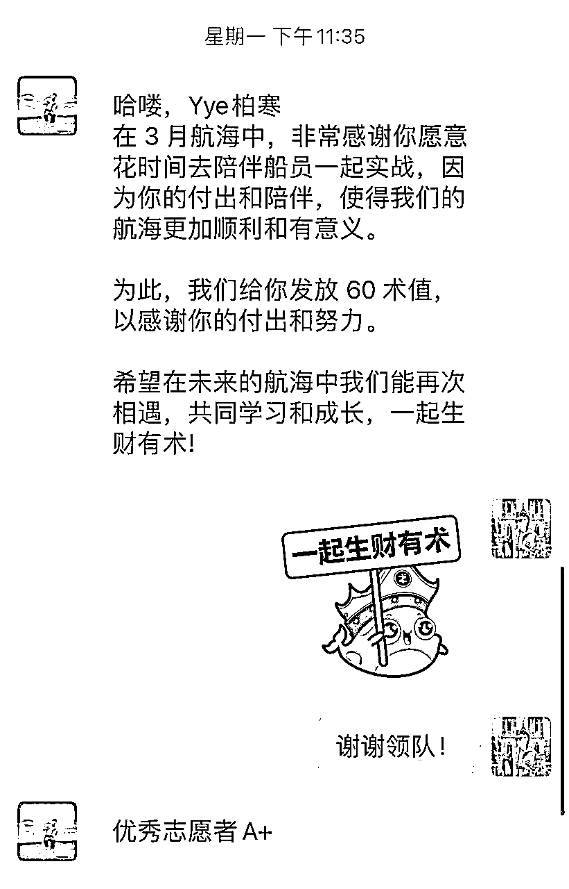
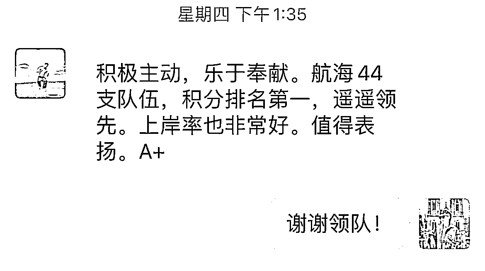
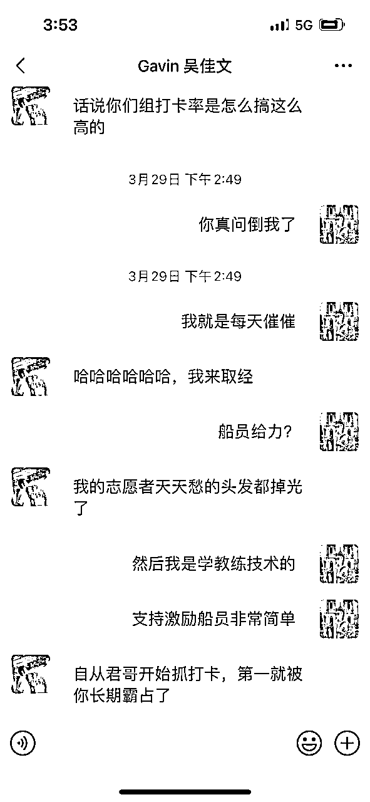
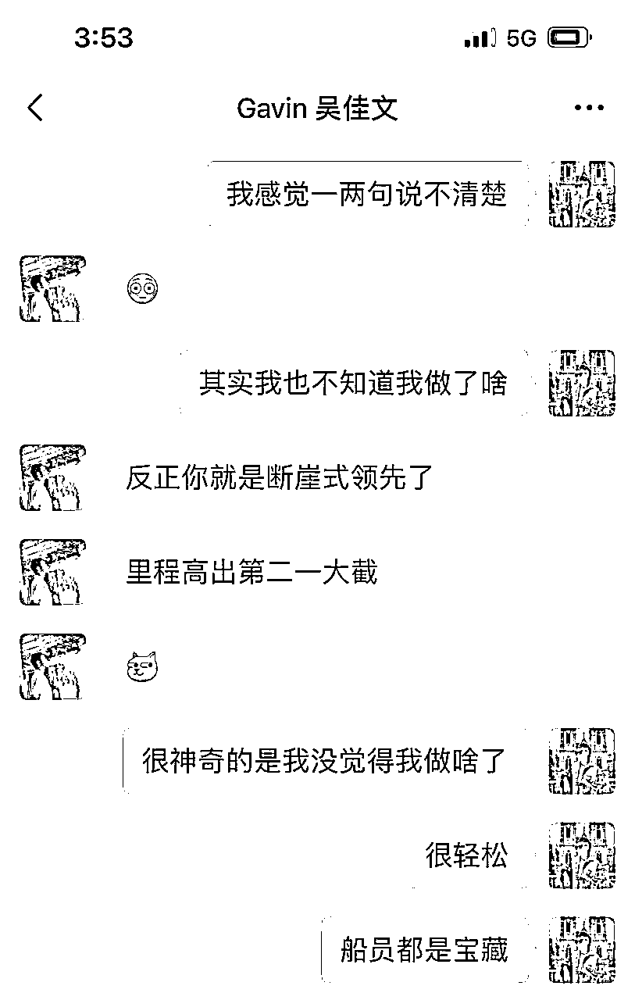
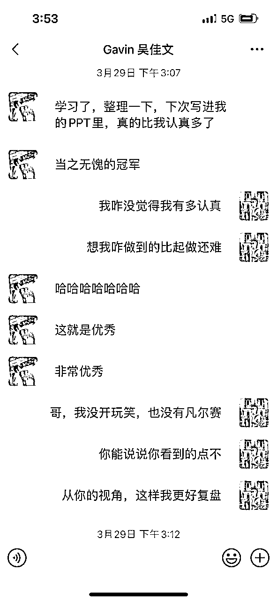
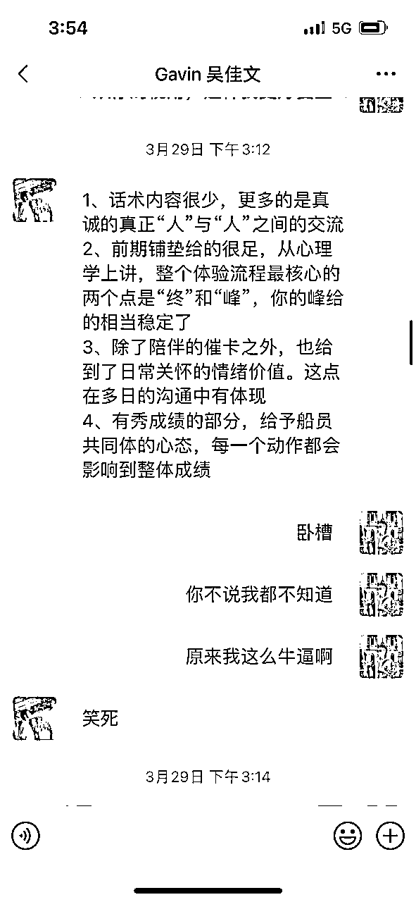
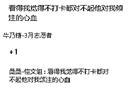
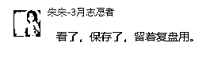

来源：https://hwiwfviz6fe.feishu.cn/docx/Bx1NdKuvQoPcTJxsin8ck2PPntc
大家好，我是柏寒，上次写了一篇关于我过去一年实战的经验复盘帖，没想到拿到精华了，很开心！！
刚好最近3月航海结束，我加入生财之后的第一次志愿者之旅也结束了。在这次航海中我担任视频号中老年知识付费（书法国画）这条船的志愿者，所在小组里程第一，而且里程数遥遥领先。最终领队给我的评分是优秀志愿者，A+！



航海中也有一个有意思的插曲，隔壁佳文领队来找我取经，问起我怎么做到的。这个问题我是很懵的，我也不知道，这样那样就做到了，我思考怎么做到的比起做还难。于是我把我跟船员的聊天记录发给领队看了一下，有了下面的聊天（文章最后有我跟船员的聊天记录）






也是因为这段经历，我决定思考复盘一下在这21天的航海中我做了什么，期望可以继续前行并且能给想做志愿者的朋友提供思路
为了方便阅读，本篇文章主要分为下列部分：
1，航海开船前
2，蜜月期
3，紧张期
4，懈怠冲刺期
5，总结
6，与船员的完整聊天截图（已经过船员同意，截掉身份信息）
1，航海开始前
我对于志愿者的理解
在3月航海开始前我就已经确定要做志愿者，并且想清楚了我作为志愿者具备的优势
首先，请问一下各位，你觉得志愿者在航海中发挥的作用是什么？
在我过往一年的航海实战中，对于志愿者最直观的感受就是：这个角色是传话筒，拉群的，工具人，并没有支持到我什么。
我在航海中的感受还是蛮孤独的，虽然船上有很多人，但是陪伴着我面对问题解决问题的只有我自己。
当然，赚钱这条路上有这样的感受很正常，毕竟赚钱是自己的事情。
也是因为我有这种经历和感受，我想给我的船员带来不一样的航海之旅。
那我能给什么呢？
咱们先思考一下，志愿者的作用是什么就知道了。
志愿者在生财的定义是“陪伴成长教练”，我非常非常认可
最主要的就是促进船员的成长，这种成长我认为不仅仅只有赚到钱这一条单一维度，反馈和感受就是成长。
赚到钱拿到结果是一种，感受（简单，有趣，开心，难，内耗，累）也是，支持到船上其他圈友，解决问题了觉得自己很棒很优秀，被圈友夸了，感觉自己很擅长这个项目
任何反馈都可以
这些反馈非常的重要，是我们作为人，跟外界碰撞之后带来的回音。这些回音很有可能是改变的开始。例如：我赚到钱了，我要放大！我不喜欢这个项目，我要换！我好内耗好焦虑，我要想想办法！我没有执行力，我要想想办法！
从长期来看，如果我们作为志愿者，可以支持船员拿到这些反馈，对于船员绝对是有帮助的。从长期来看，我们作为志愿者在船员成长的一个节点上深度参与是非常荣幸非常棒的体验。
还有什么比支持他人的成长以及自己的成长更让人激动呢？
既然志愿者最主要的职责是陪伴成长，那通过什么方式呢？
我理解的志愿者需要做到：
一，志愿者的基本工作，例如：拉群，同步消息，点评作业，催打卡等等
这一部分的目的是：
1，完成基本的运营工作
2，通过日志打卡这种清晰具体的方式督促船员行动
二，实战上的指导和帮助，例如：项目上的建议以及经验分享
这一部分的目的是：
根据志愿者自身做项目的经验，认知，技能，充当船员的1对1项目导师，支持或者陪伴船员解决航海中遇到的项目问题
三，行动教练，例如：鼓励船员，支持船员设定目标，肯定船员，提升船员动力，跟进船员行动，督促学院行动，复盘
这一部分的目的是：
1，肯定，鼓励，激励船员，激发船员的行动意愿
2，支持船员设定自身想要的目标，并且陪伴船员一起达成目标
3，消除船员对于结果的期待，失败的恐惧，迷茫等等内心的卡点
4，陪伴的情绪价值
如果志愿者同时能满足这些点，对船员会有巨大帮助。但是对于志愿者的综合素质是有要求的，刚好，我都满足。
1，感谢生财的志愿者sop以及后台系统，日常运营所需要具备的基础知识很简单就可以达成
2，项目知识来自于我过去一年的实战经验，虽然说没有拿到大的成果，但是大部分的项目我都跑通了，在项目0-1这个阶段我拿过结果。哪怕项目我没做过，但是做成项目的心态，逻辑，技能是可以迁移的
3，我是国际教练联盟的教练，受过专业培训，教练小时数80h+。我的盖洛普前10中有积极，取悦，交往，这三个才干结合教练技术在激励船员方面很简单。
所以第一个复盘的点，我对于志愿者的价值有自己的思考，并且我过去的积累符合了志愿者的定位。
对于船的选择
根据上面的分析以及3月公布出来的航海项目，我决定参加的船是闲鱼高客单
原因是：
1，去年5月-11月我一直在做闲鱼二手书项目，了解闲鱼的操作
2，我认为闲鱼是很好变现拿结果的船
3，在开船前我把闲鱼高客单相关的所有帖子都看了一遍并且下场实操，在领队加我好友前已经出单
结果是真的计划赶不上变化，我的第一志愿报名闲鱼高客单，最后给我调剂到第二志愿的视频号中老年知识付费这条船，我完全没做过视频号相关的项目，很少看视频号，也没做过知识付费。
专业指导这条路我走不通，所以我在航海期间工作的中心是提供情绪价值，陪伴以及激励。
在加好领队之后下一步就是加船员好友拉群，我总共32位船员，这里我给自己定的是每天拉10位船员。
因为我想在最开始的时候是跟船员建立联系最好的阶段，多聊聊，通过提供价值，把我跟之前他们遇到的志愿者区分开，可以说这一部分做好了，后续的工作会更轻松。
具体做法其实就两步
1，加好友前在生财或者找鱼丸要相关航海的合集，加好友之后直接把中老年知识付费合集发给每一位船员
如果是闲鱼或者其他我熟悉的船，我会选择发帖子，在航海手册出来前我会告诉船员，哪个帖子可以先看，能得到什么，哪个帖子后看能解决什么问题。
视频号没做过，但是发之前我也全部看过，如果船员想探讨我也可以聊。这里不需要我多懂这个项目，毕竟是志愿者，对于项目了解是惊喜，而不是一定要达到。
目的是：区分我跟之前遇到的志愿者，体现用心和专业，也可以告诉船员，这个项目我是懂的，我不是一个催打卡的机器，我是活生生的人，我是专业的，你可以来找我探讨。
2，在航海后台看船员这一次参加几条船，问问船员的情况，需不需要提醒打卡，了解船员的目标，多聊聊天
目的是：熟悉对面这个人，也让对方熟悉我，我们都是活生生的人，志愿者不是工具，船员不是顾客，我们是战友和伙伴
具体的聊天可以看最后部分，我准备了跟船员的聊天截图
在这里特别要注意的是，在问船员目标的时候大部分船员都会说跑通项目，赚钱。这些说法我会觉得不够清晰。
船员怎么样就算是跑通？船员想要赚到多少钱？
其实具体的就是在这21天内，想要通过这个项目达到什么？
怎么样就算是达到了？需要符合SMART原则，清晰，可实现，相关，时间限制，可衡量
为什么要这么做，我自己的经验是清晰就是力量。去年做二手书这个项目的时候我也是制定了具体清晰的目标，能明显的感觉到更有力量和动力。
在制定目标的过程中，我们可能会感觉不愿意，船员可能也会。这里其实是可以聊聊的，这背后代表着一些恐惧，害怕，想要做的完美这些内心的卡点在。由于我是教练，具备识别这些内心卡点的能力，我可以展开跟船员聊聊，包括在航行中也可以聊，这些都是能支持船员的。
第二个复盘的点，我是独特的志愿者，愿意跟船员交流，愿意了解船员，想要跟船员交朋友，而不是仅仅拉群完成任务，给到船员的感受是：这是跟我一样做项目的人，不是催打卡的机器。
2，蜜月期（结合聊天记录看更好）
蜜月期是什么意思，就是刚刚开始航海，基本上船员都会很有动力和冲劲的开始看航海手册开始实战，志愿者其实不需要怎么管。
这个时候我主要是自己开始做项目，因为只有自己把这个项目做一遍，才能理解我的船员现在遇到的挑战是什么？如果我能解决那我可以提供支持，如果解决不了可以更好的问教练和领队。
我之前做过的项目加上我战略思维维度才干靠前，只要我自己做过，能领悟到关键点，我就能想清楚逻辑，也可以把这件事情讲透。这一点在航海的过程中有体现，我的思考和总结可以给船员项目上的启发，船员会跟我聊天探讨项目的思路，我们是战友。
如果我说的写的东西船员没看懂，理解不了。这不是船员的问题，是我没领悟透。只要我想明白了，我就能给你说明白。
我认为这是非常关键的一点，毕竟船员参加航海是想要拿到结果，我前面提到的志愿者具备的素质以及行为都是为了支持船员拿到结果。
除了项目之外，当船员遇到内心卡点，比如执行力，内耗，怕困难等等，因为我对于项目上的了解，真切的感受过这些项目关键节点，我能更好的共情我的船员，做到真的感同身受，更加针对性的给出建议。
这里需要注意，船员间的认知，执行力，技能，时间，精力，学习能力都不一样，我作为志愿者需要做到的是看到船员自身的发光点，看见船员是否走在变现路径上，跟他自己比，及时的肯定鼓励船员。这也是我在点评日志的核心思维。
在点评日志以及激励船员我的核心点是无论多小的进步都值得鼓励。
因为积极才干靠前，我总能找到夸船员的点。
船员开始几天没打卡，第一天打卡了我会夸：恭喜你开始行动，踏出第一步是成功的开始，为你的勇气点赞；
如果船员写的日志是每天都是看手册，并没有实战，我会在私聊提醒不要水日志的情况下夸他：能持续的坚持学习，很棒！
还有很多会出现的，船员说到遇到了问题或者说最近没行动：那我会恭喜他们看清了现在遇到的挑战，为他们的思考点赞；没行动没关系，休息一下是为了更好的扬帆起航。
你放心好了，当我的船员，我能给你夸出花来！给你来场心灵SPA！
第三个复盘点：会夸人，会鼓励人，情绪价值拉满；有项目经验，逻辑思维强，能给船员提供项目的思路。
3，紧张期
为什么说是紧张期呢？
很有意思的点是，其实最开始我并没有很在意小组里程的排名，我都没看过这个。同时领队在开始的时候给了我们适应的时间，也并没有提起这个点。
后续第二周开始，领队开始严抓打卡，好事。我能很明显的感觉到压力上来了，有点紧绷，一到晚上就开始催打卡。
这种感觉其实我是不舒服的，我更喜欢的支持鼓励船员，而不是紧绷的催促，感觉这样有点强迫，会给到船员压力。
自从领队抓打卡之后，我感受到的压力直接转化成了更多次的催打卡，包括之前跟我说不用催打卡的船员，我只要在晚上催打卡的时候没看到打卡已完成，我就会私聊催促。催一次不打隔半个小时再催一次，只要不打卡，就催到当天结束。
我认可的观点是：我可控的，能做到的是我每天催打卡的次数，我有没有有效的触达到船员，让他们意识到需要打卡。那个时候我想的是，你要么就打卡，要是烦，把我删了吧。
也是感谢我的适应才干靠前，这种变化给我带来了动力，可以更好的转变成行动。在我加大催卡力度，提醒船员写好事之后，我的组从第三到了第一，在第二周开始拉开差距，遥遥领先。
在催打卡的过程中，我也有运用一些技巧，目标是要达到的，但不能真被讨厌删好友啊对吧？
我是怎么做的呢？
1，换各种打招呼的方式，提供情绪价值
最简单的就是在开启聊天的时候说：
1，叮咚
2，我路过，别管我，你继续
3，我就来看看
4，表情包（可以是催打卡的，可以是自己喜欢的）
5，根据日志以及之前聊天的情况关心船员的近况
这么做的目的其实很简单，我用轻松愉悦的方式开启聊天，只要我跟船员之间的关系不崩盘，他看到我的消息其实就能意识到要打卡。
我想要给船员传递的是：我不是一直要催你打卡，我是为你好，关心你，我很有趣，跟我聊天很开心。
2，适当的示弱提要求
有很多次船员都不回我，没关系，只要没删我，我发的消息你会看到就行，我的目的就达到了，按照设想的方式，情绪+关心+催打卡+鼓励的方式单方面发聊天就好了
有的时候船员会回我一下，这个时候我的选择是感谢船员，而不是怪罪船员为什么不回。怪罪和情绪没有意义，并不会有利于拿到结果。
但是我们志愿者也是人，我也是有脾气的，怎么办？示弱就好。
我一般会跟船员说：谢谢你愿意回我！！我知道你在看我消息就行！我看到你在打卡做项目了，很棒，加油！
我们的目的是促进船员的成长和行动，只要船员行动了，回不回我消息都没关系，简单委婉的表达一下就好了，绿茶一点-我没关系的，我只是心疼哥哥-这谁看谁不迷糊啊哈哈哈哈
至于不打卡还不回消息的，这种不尊重人的，别惯着，真的是给脸了。
该硬就硬，该打电话打电话，都是成年人，该叫他们下船下船，我们不欠他们的，别骂人就行，每过半个小时催一次，他敢删一个试试？反手就告诉领队，只要打卡了一切好说，没打卡就催。
至于给船员提要求这个点，是在第二周我的组里程快被第二名追上了，我把所有的船员全部私聊一遍，把我们组排名第一的截图发一遍，告诉各位船员我们组现在快被抓上了，我感受到了压力，需要他们的帮助，需要他们多写写好事，多打卡。这么一说完，船员会有一种共同体，集体的心态，多少都会努力努力，撑过了这周，很多人就懈怠了，这个时候维持住就好了。
复盘第四点，清楚自己现阶段需要的是什么，选择合适的沟通方式达成目标
4，懈怠冲刺期
在最后一周，船员会感觉到疲惫，也会因为快到靠岸时间了懈怠，包括我自己也是。我认为一直保持一个积极高能量的状态是很难的，也不需要这样，更好的方式是具备随时可以提高能量和动力的状态，平时摆个烂休息一下也没什么大不了的。
这个时候志愿者的状态，激励手段就非常的重要了。
我刚好那段时间休假跟朋友出去旅行，回到深圳之后没什么状态，很懒散，项目也不想做，但是依旧坚持着完成我志愿者的工作。
我选择了下列方式激励船员
1，yes and
遇到船员跟我说打完12次就可以了，不想继续打卡了，主要是体验项目，发现这个项目不合适。
这里我想起靠谱提到的销售技巧，yes and
在这个场景下，船员想要的已经得到了，那我就恭喜船员已经打卡完成，恭喜她已经达到了他的目标，这是第一步。
第二步，告诉她我理解的航海打卡价值是为了记录下自身的成长，从成长，自我价值提升这个更高的维度去告诉船员，你坚持打卡是为了未来更好的自己，一寸前进有一寸的欢喜。
2，靠岸倒计时
这个时候属于航海最终的冲刺阶段，自驱力强持续行动的船员基本已经靠岸了，对于靠岸的船员，我会给出鼓励，恭喜他们靠岸成功，鼓励他们持续打卡。
对于还没有上岸的船员，我会改变之前催打卡的模式，改为鼓励船员，在坚持几天就上岸了，就类似高考的拼搏100天倒数。
我认为这种告诉船员在坚持打卡就可以靠岸的方式是有效的。我平时健身的时候训练动作做到最后一组最后几个的时候真的非常累，每当教练跟我说还有最后几个的时候我就感觉还能坚持坚持，数量慢慢变少，坚持下来距离完成目标越来越近的感觉其实很棒，也会让我更有动力完成。
我的主要注意力和精力会放在休息次数少，需要每天都完成打卡的船员，每天晚上都会提醒，基本上是7-8点提醒一次，之后每隔半小时提醒一次，只要没打卡就提醒
3，告知拿回保障金的意义和价值
我认为当我们在航海结束的时候能够拿回保证金是很有意义和价值的事情。
我们在21天学习了新的项目玩法，下场实操，解决了一个个问题，拥有了感受，体感，反馈，结果等等的一切。
有的船员拿到成果赚到了钱。
有的船员学习掌握了这个项目相关的技能。
有的船员下场之后发现这个项目做起来很累很不开心一点也不喜欢。
有的船员发现很难学不会。
也有的船员会发现下了班之后还要做项目很累不想做。
也有的船员因为看见其他圈友拿到结果但是自己连最简单的问题都解决不了而焦虑和内耗。
这些都是反馈，都是成果，只要有成果就是可以支持我们在赚钱这条路上做出调整。
1，赚到钱的圈友可以选择继续做这个项目，放大，组建团队。
2，学到技能的船员可以继续加油，也可以把这次学到的技能用到其他项目上
3，感受到项目的酸甜苦辣，恭喜你，你知道做项目做副业是怎么回事了，接下来项目的选择会更加清晰。
4，没有执行力，容易内耗，如果你觉得是个问题，那就解决吧
最重要的是拿到这些反馈和成果，付出的是时间和精力。至于付出的金钱也就是打卡押金已经收回来了。时间和精力哪怕不做项目也会在其他事情上付出的不是吗？
所以说只要把保证金拿回来，可以说是稳赚不赔的。
我就把这些给船员一说，咬咬牙坚持坚持，上个岸还是很简单的。
也可以用来鼓励已经上岸的船员，肯定他们的努力，鼓励船员持续行动，拿到更大的结果。
复盘第五点：在最后阶段很理解船员的感受和状态，根据自身的经验，用积极正能量的方式鼓励船员。
5，总结
1，开船前了解志愿者的作用，根据自身的理解，结合我的优势给船员提供支持。
2，有过航海的经验，持续行动和迭代，做航海项目拿到过结果
3，教练技术
4，合适的沟通方式，销售知识
5，逻辑分析，生活中的经历知识可迁移
6，聚焦在自身可控的事情，做好
7，无敌领队以及宝藏船员
8，认真负责，真的很想支持船员成长（最重要！！！！）
6，跟船员的聊天记录（22位船员的聊天，已经过同意，已处理好个人信息）
链接：https://pan.baidu.com/s/1vIOKjgENz6_2b2tsPS-rEQ?pwd=2dtb
提取码：2dtb
--来自百度网盘超级会员V6的分享
写在最后
感谢各位的阅读，感谢生财团队，教练，领队以及各位志愿者的付出，也感谢各位船员的参与，让我们第八期5月航海见！！